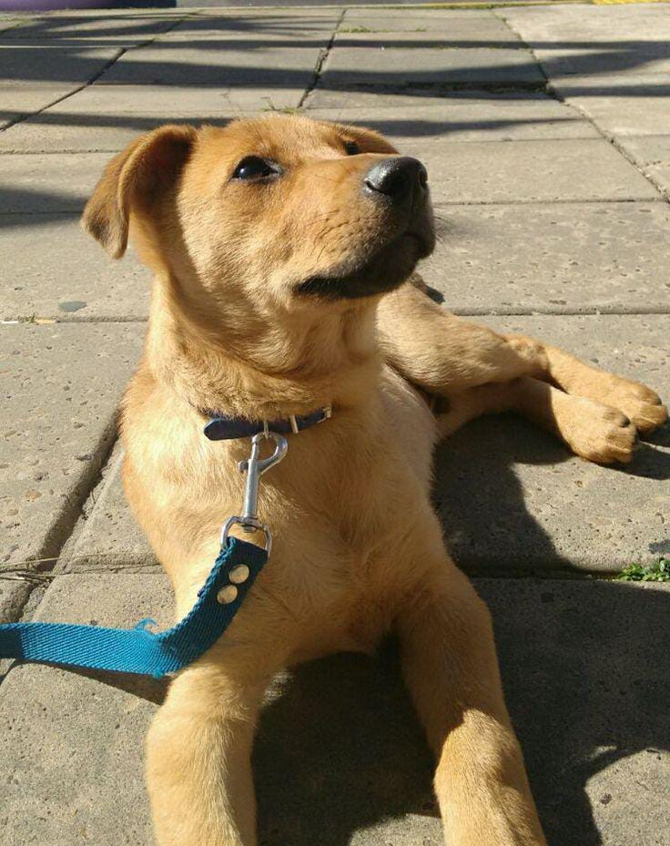

En Huellitas creemos que cada vida importa. Nuestro refugio nació del deseo de ofrecer una segunda oportunidad a los animales que han sufrido el abandono, el maltrato o la indiferencia en las calles. Cada rescate es una historia de esperanza, donde una mirada triste vuelve a brillar con amor y confianza.
A diario recorremos barrios y zonas rurales en busca de animales que necesitan ayuda. Muchos llegan a nosotros desnutridos, heridos o temerosos, pero en Huellitas reciben atención médica, alimento, y sobre todo, cariño. Con paciencia y cuidados, poco a poco vuelven a mover la cola y a confiar en los humanos.

Además, en nuestro refugio realizamos entrenamientos básicos que preparan a los animales para ser adoptados. Aprenden a caminar con correa, convivir con otros animales y responder a órdenes sencillas. Esto les da más oportunidades de encontrar una familia amorosa que los cuide para siempre.

Adoptar en Huellitas significa abrir el corazón a una nueva historia. Cada huellita que deja un animal adoptado en su nuevo hogar es una muestra de que el amor y la compasión pueden cambiar vidas. Juntos, seguimos dejando huellas de esperanza.